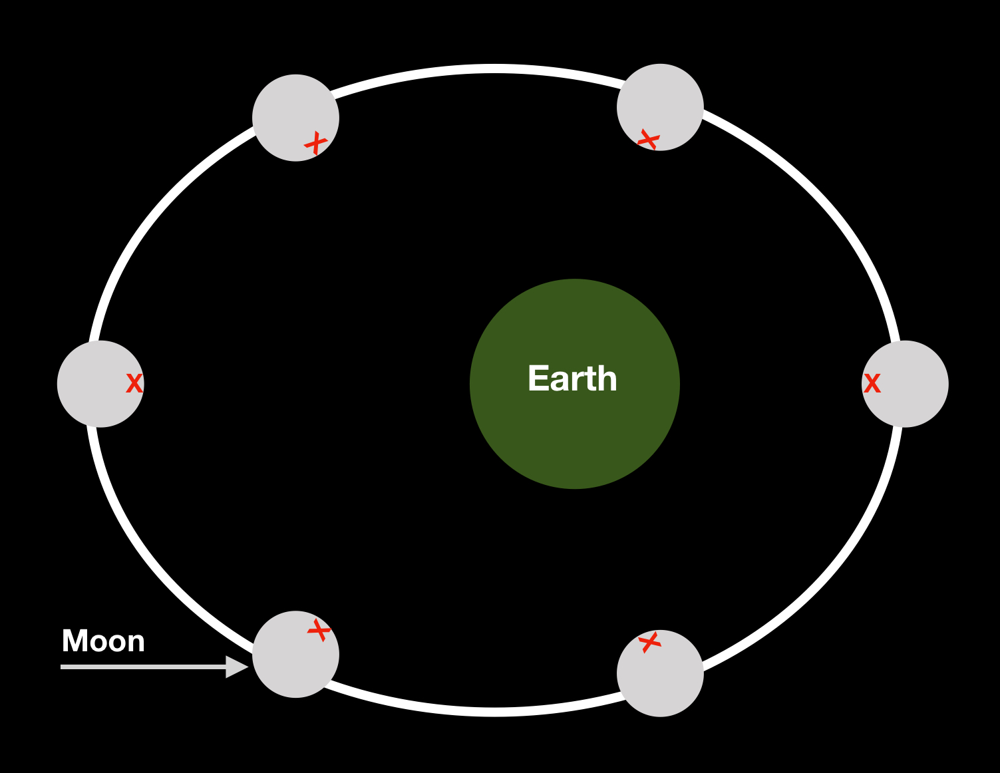
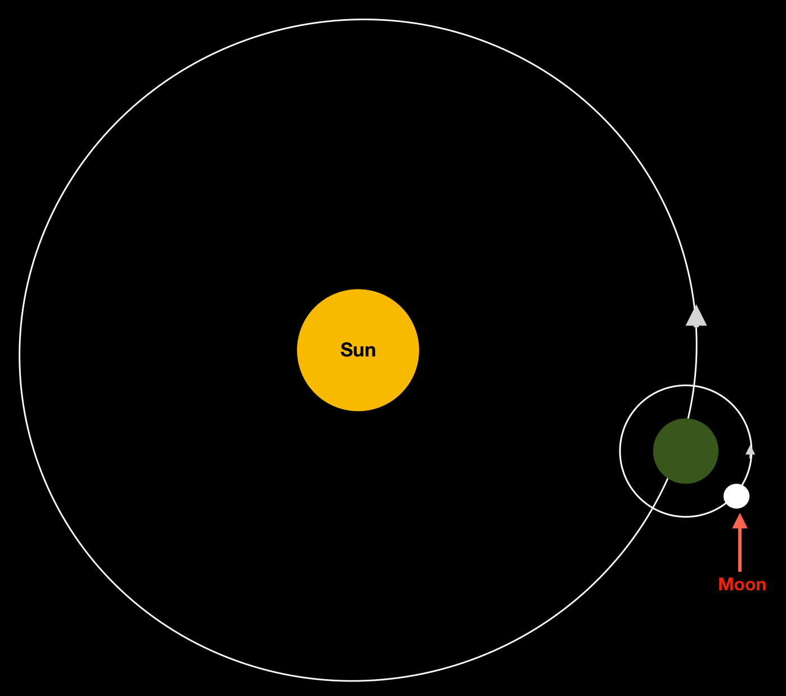

The moon is a natural satellite that orbits the planet permanetly
The Moon is in synchronous rotation with Earth, so always shows the same side to Earth.

Distance to Earth: 238,900 mi (384472.282 km)
Orbital period: 27d 7h 43min 11.5s
Radius: 1,079.4 mi (1737.126 km)
Mass :7.35 x 1022 kg (1.2 percent of Earth's mass)
The Earth and the moon both orbit the sun:
